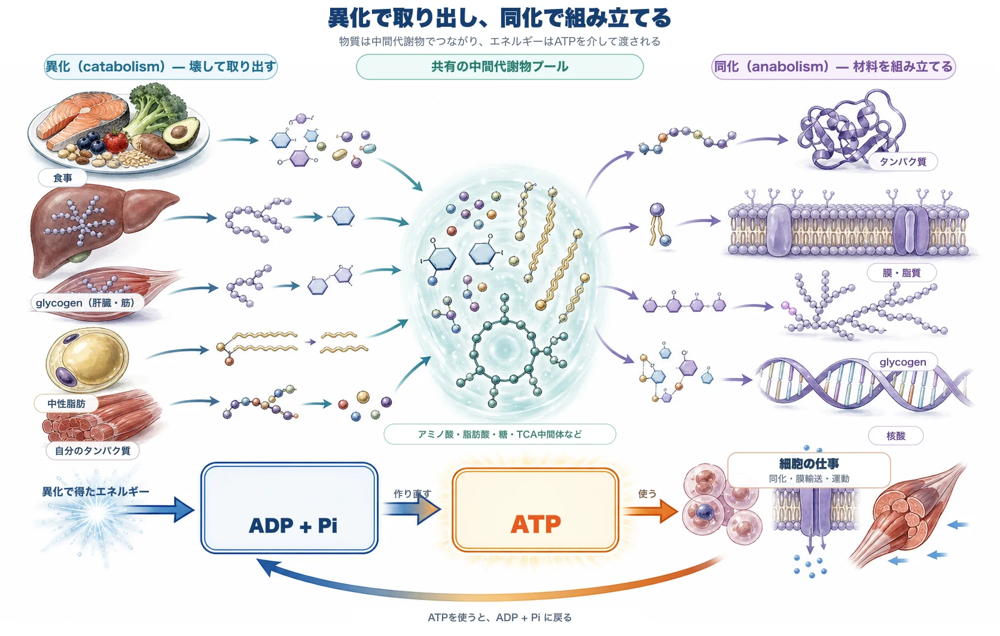
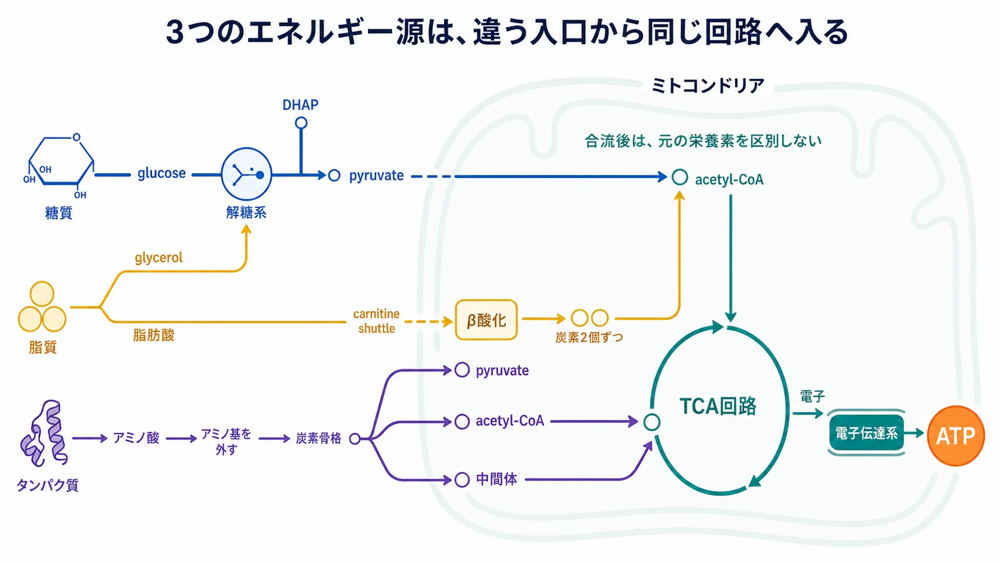

基礎 ／ エネルギー
代謝とATP
公開 2026-08-24
転写も翻訳も、折りたたみも輸送も、細胞の仕事はすべて ATP を使います（→ オルガネラ）。では、ATP はどこから来るのか。
この章の一言
ATP は、異化から生じるエネルギーの通貨です。栄養素や、体に蓄えた glycogen・中性脂肪を壊すとエネルギーが出ますが、それはそのまま仕事に使われるわけではありません。いったん ATP に移され、細胞はその ATP を分解してエネルギーを受け取り、組み立て・輸送・収縮にあてます。
そして ATP は貯まりません。使えば ADP に戻り、また作り直される。同じ分子が、1日のうちに何度も作られては使われています。だいじなのは、ある瞬間の ATP 量ではなく、需要に応じて作り続けられることです。
1 代謝とは、壊す側と組み立てる側のネットワーク
代謝（metabolism）とは、物質を分解し・変換し・合成する化学反応のネットワーク全体を指します。方向が2つあります。
- 異化（catabolism） ── 大きな分子を壊して、中間代謝物と使えるエネルギーを取り出す
- 同化（anabolism） ── 材料を組み立てて、大きな分子を作る
異化が壊す相手は、食べた栄養素とはかぎりません。体に貯蔵してあるエネルギー——glycogen（糖の貯蔵形）と中性脂肪（脂質の貯蔵形）——も、必要になれば同じように分解されます。自分のタンパク質も同じです（→ DNAからタンパク質まで・オートファジーとリソソーム）。
異化と同化は、つながっています。異化で出たアミノ酸・脂肪酸・糖は中間代謝物のプールに入り、同化はそこから材料を取ります。
エネルギーのほうは、ATP がすべて引き受けます。食べたものや体の貯蔵物を分解して ATP を作り（解糖系・TCA回路・電子伝達系）、その ATP が分解されるときに出るエネルギーで、細胞は仕事をします。

2 エネルギー源は3つあり、入る場所が違う
糖質・脂質・タンパク質は、どれもエネルギー源になります。最後は acetyl-CoA か TCA回路の中間体に合流しますが、そこへ至る道筋と、入る場所が違います。

| 栄養素 | 分解されて | どこから入るか |
|---|---|---|
| 糖質 | glucose などの単糖 | 細胞質の解糖系を通って pyruvate になり、ミトコンドリアで acetyl-CoA へ（→ 解糖系） |
| 脂質 | 脂肪酸と glycerol | 脂肪酸はミトコンドリアに入ってから、炭素2個ずつ acetyl-CoA として切り出される。glycerol だけは解糖系の途中に合流する（→ 脂肪酸とケトン体） |
| タンパク質 | アミノ酸 | アミノ基を外した炭素骨格が、pyruvate・acetyl-CoA・TCA回路の中間体という複数の場所から入る（→ TCA回路） |
3 ATP は貯金ではない ―― 在庫は少なく、流れは多い
ATP は、分解されるときにエネルギーを放します。ATP が ADP と無機リン酸（Pi） に分かれるとき、そこでエネルギーが出て、細胞はそれを使って仕事をします。残った ADP は、異化から得たエネルギーで再び ATP に戻されます。この往復が絶えず繰り返されています。
ATP を使う仕事は、大きく3つです。
- 同化 ── アミノ酸・脂質・糖といった材料を、タンパク質・膜・glycogen・核酸へ組み立てる
- 膜輸送 ── 濃度勾配に逆らって物質を運ぶ（Na⁺/K⁺ポンプなど）
- 運動 ── 筋収縮、細胞内の輸送、繊毛の運動
ATPは貯めておく物質ではありません。 体内にあるATPは常時わずか数十グラムの桁ですが、1日に作られて使われる総量は体重に相当する桁になるとされます。したがって重要なのは、ある瞬間のATP量ではなく、需要に応じてATPを作り続けられることです。
貯蓄は glycogen と中性脂肪が担い、ATP はその場の受け渡しだけを担当します。 蓄えから随時ATPを作り、作った分をすぐ使う。だから在庫は少ないのに、流れる量は桁違いに多くなります。
4 ATP不足は、AMPの上昇として増幅される
ATP・ADP・AMP は、同じ分子です。違うのは、付いているリン酸の数だけ——ATP が 3個、ADP が 2個、AMP が 1個です。
細胞にある adenylate kinase は、ADP 2個のあいだでリン酸を1個やりとりさせます。渡された側は3個になって ATP に、渡した側は1個になって AMP になります。反応が速いので、次の式は常にほぼ平衡に保たれています。
2 ADP ⇄ ATP ＋ AMP
リン酸の数：2 ＋ 2 ＝ 3 ＋ 1
リン酸が付け替わるだけなので、3つを合わせた総量は変わりません。動くのは内訳だけです。
ここで効いてくるのが、もともとの量の差です。平常時の比は、おおよそ ATP : ADP : AMP ＝ 100 : 10 : 1。AMP だけ桁違いに少ない。
だから内訳が動いたとき、それぞれにとっての「増え方」がまるで違います。ATP を1割ぶん使ったときの計算がこれです。
| 平常時 | ATP を1割使ったあと | 変化 | |
|---|---|---|---|
| ATP | 100 | 91.9 | 8% 減っただけ |
| ADP | 10 | 16.3 | 1.6倍 |
| AMP | 1 | 2.9 | 約3倍 |
| 合計 | 111 | 111 | 変わらない |
ATP の側では誤差にしか見えない変化が、AMP の側では3倍になって現れます。もとの量が少ないほど、同じだけ増えても倍率が大きくなるからです。エネルギー不足を測る目盛りとしては、ATP より AMP のほうがずっと感度が高いということです。
AMP の上昇は、エネルギー不足の合図です。 それを感知するのが AMPK（AMP-activated protein kinase） です。 異化（ATPを作る側）を促し、同化（ATPを使う側）を抑える——代謝の向きを切り替える kinase です（→ AMPKとmTORC1――エネルギーと材料の使い方を調節する）。
発展：細胞外へ出たATP。 組織の傷害などで局所的に細胞外へ放出されたATPは、エネルギー源としてではなく、P2受容体を介した危険信号として働きます。この役割は DAMPs を扱う炎症と創傷治癒で説明します。
この章の到達点
- 代謝は、壊す側（異化）と組み立てる側（同化）を含む反応のネットワーク。 エネルギーの受け渡しは ATP がすべて引き受ける——分解して ATP を作り、その ATP を分解して仕事をする。
- エネルギー源は糖質・脂質・タンパク質の3つ。最後は acetyl-CoA か TCA回路の中間体に合流するが、そこへ入る場所が違う。
- ATP は貯める分子ではない。在庫は数十グラムの桁でも、1日に作られて使われる総量は体重に相当する桁になる。貯蔵は glycogen と中性脂肪が担う。
- ATP が減ると AMP が大きく増え、AMPK がそれを感知する。
解糖系では、電子を抜き取る最初の工程 解糖系（glycolysis） を見ます。glucose 1分子から得られる ATP は正味2個——この数字が、細胞の代謝の見方を決めます。